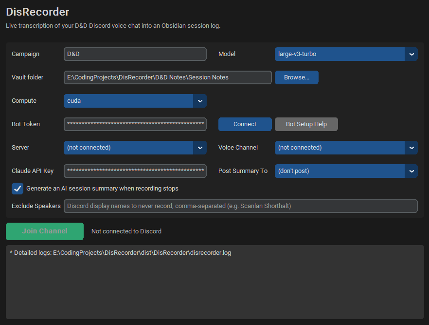

DisRecorder
Live transcription of D&D Discord voice sessions into Obsidian-ready Markdown logs.
Building tools, bots and self-hosted things.
Hi! My name is Sean Clarke, and I am a Computer Programming (CPRO) graduate from Lambton College (3.8 GPA, Dean's List, CIBC Business Award for Academic Excellence). I am a huge gamer with a passion for game development and UI/UX design who is familiar with C#, Python, Java, and SQL/NoSQL. When I am not playing games, I'm planning & developing various tools and programs to solve issues, or increase QOL. After 15+ years of working in customer service/retail as both management and human resources, I bring my previous leadership skills, adaptability, and positive attitude into the tech industry.
Click each card for more information.
Live transcription of D&D Discord voice sessions into Obsidian-ready Markdown logs.
Windows desktop app for tracking your Steam library, playtime, and achievements.
A vehicular-demolition game where you clear a safe path for an unstoppable hauler using a fleet of specialised machines.
A cyberpunk psychological-horror first-person shooter where your grip on your own humanity is a core mechanic.

Live transcription of D&D Discord voice sessions into Obsidian-ready Markdown logs.
Windows desktop app for tracking your Steam library, playtime, and achievements.
A vehicular-demolition game where you clear a safe path for an unstoppable hauler using a fleet of specialised machines. Built in C# on Godot with Jolt physics and a deterministic two-layer destruction system.
A cyberpunk psychological-horror first-person shooter where your grip on your own humanity is a core mechanic.
May 2026 – Sep 2026
2011 – Aug 2024
Lambton College · Graduated July 2026
Languages
Web
Databases
Tools